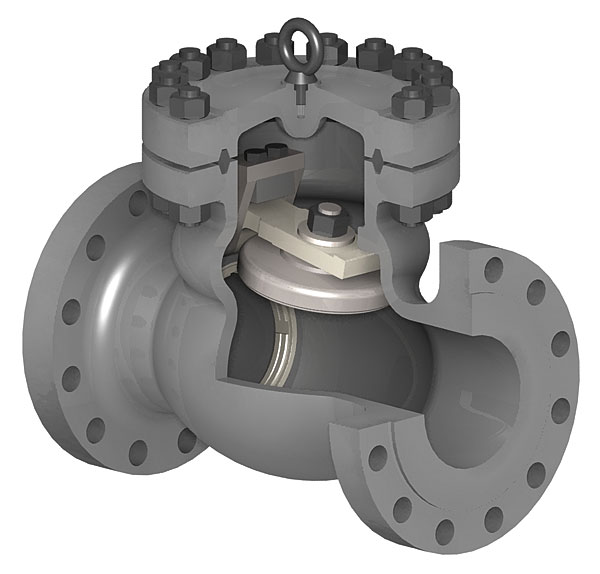

Check valves, also known as one-way or non-return valves, play a vital role in the fluid handling systems of a wide range of industries. By limiting the flow of fluid through a system to a single direction, they eliminate the risk of backflow, overflow, or other conditions that can cause damage to upstream equipment, such as other valves, pipes, and pumps.
This check valve type consists of the following components - the body, cover and ball. The body is generally flanged but can also be threaded. The internals of the body provide a full and smooth bore ensuring full flow with low head loss across the valve. This design also ensures that no solid deposits can build up at the base of the valve. The ball rotates during operation eliminating the risk of impurities getting stuck on the ball.
Further to the aforementioned low head loss and unobstructed flow path, these valves are also relatively economical and can be installed in both horizontal and vertical orientations as standard. Due to the simple nature of the operation and the small number of moving parts, ball check valves require very little maintenance. When maintenance is required, the ball check valve can be accessed from the top and can be maintained without removal of the valve body.
Also known as the butterfly check valve, the dual disc check valve is a maintenance free, self‐acting check valve of the double disc wafer type. This valve is particularly useful for installation in pipelines due to its compact design and very short face to face dimensions. The short cylindrical body is usually of the wafer type and has a centric shaft design which is inserted into the body. Torsional springs are fitted onto the shaft which hold the discs in a closed position in zero flow conditions. When flow passes through the valve, the hydraulic force exceeds the spring force and causes the discs to open parallel to the axis of flow.
The operation of the swing check valve is based on a rotary motion. Under flow conditions, the fluid exerts a force on the disc which causes it to rotate upwards. When the flow reduces, the disc returns back to its closed position due to gravity. When the flow reverses, the pressure of the fluid acting on the disc forces it onto its seat which seals the valve and prevents flow reversal.
Swing check valves are not generally suitable for pumped stations with frequent pulsating flows. Depending on the frequency and severity of these pulses, it can result in accelerated wear and tear of the moving parts within the valve.
The tilting disc check valve is similar in appearance to an eccentric butterfly valve. The valve body is double flanged and of a short length. The disc is held in place via a shaft which is positioned eccentrically from the body centreline in both the horizontal and vertical axes. Higher quality products have stoppers attached to the disc which limits the valve opening and ensures that the disc remains in a more static position when subjected to sufficient flowrates.
During flow reversal, the disc closes due to gravity and the upper part of the disc above the shaft centreline pushes against the flow thus acting as a hydraulic brake which cushions the disc as it returns to the closed position. Tilting disc valves can be supplied with optional levers and weights to adjust the closing characteristics of the valve.